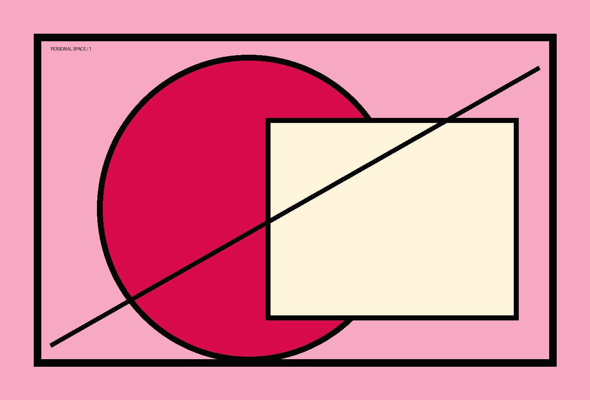
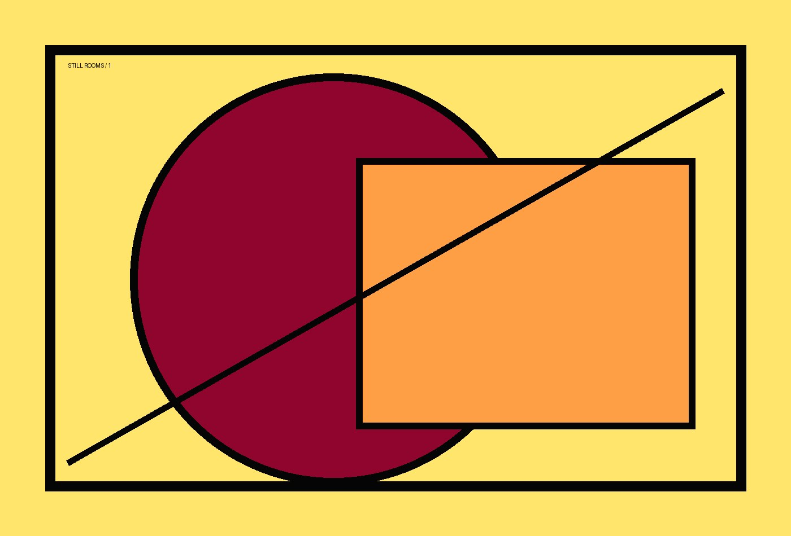
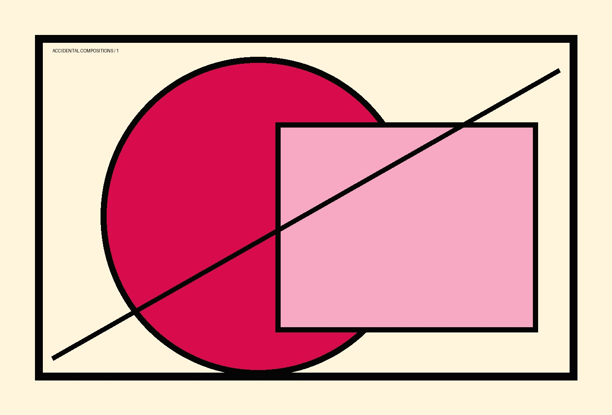

OCR ghosts
Errors, distortions, damaged text, and the strange poetry of machine mistakes.
AI · archives · entities · photographs
I work with historical documents, noisy OCR, multilingual NLP, named entities, cultural heritage, and the very suspicious lives of archives.
About
I research historical newspapers, named entities, OCR post-correction, multilingual NLP, and computational methods for cultural heritage. This page is a first small home for my projects, publications, experiments, writing, and photographs.
Current obsessions
Errors, distortions, damaged text, and the strange poetry of machine mistakes.
Names, places, people, functions, aliases, and all the ways identity breaks in archives.
Small language models, historical newspapers, and questions that look simple but are not.
Photographs, bodies, rooms, objects, traces, and personal space as a stubborn archive.
Selected work
Named entity recognition and linking for multilingual historical newspapers and noisy archives.
Benchmarks, datasets, prompts, and evaluation setups for correcting historical text.
Embeddings, biographies, context, and strange neighbors in large-scale newspaper collections.
Photographs
Covers first. Click a project to open its own page, then scroll through the images inside it.

01Body, room, performance, interior pressure.

02Domestic traces and places pretending to be empty.
 03
03
Skin, glass, fabric, reflection, small collisions.

04Things found before they knew they were arranged.
Contact